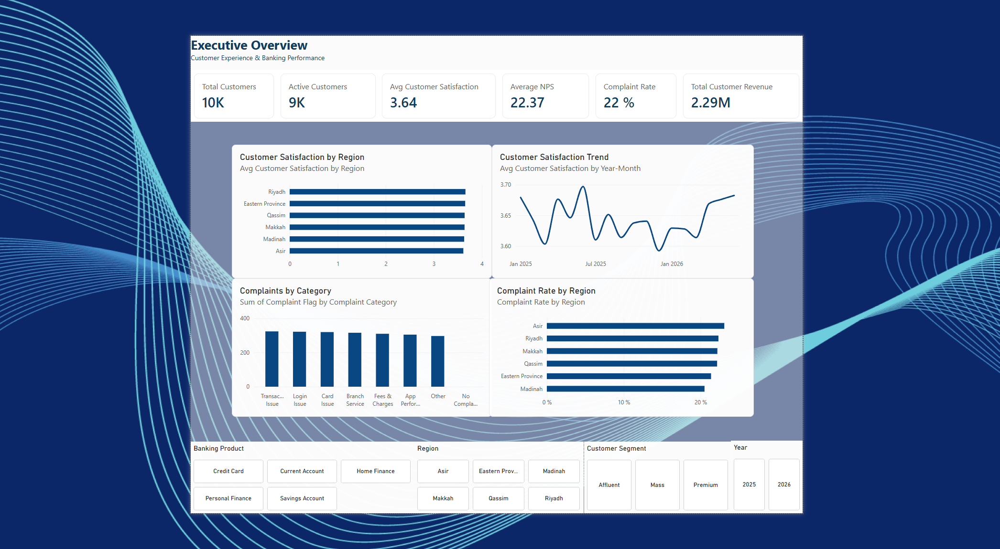
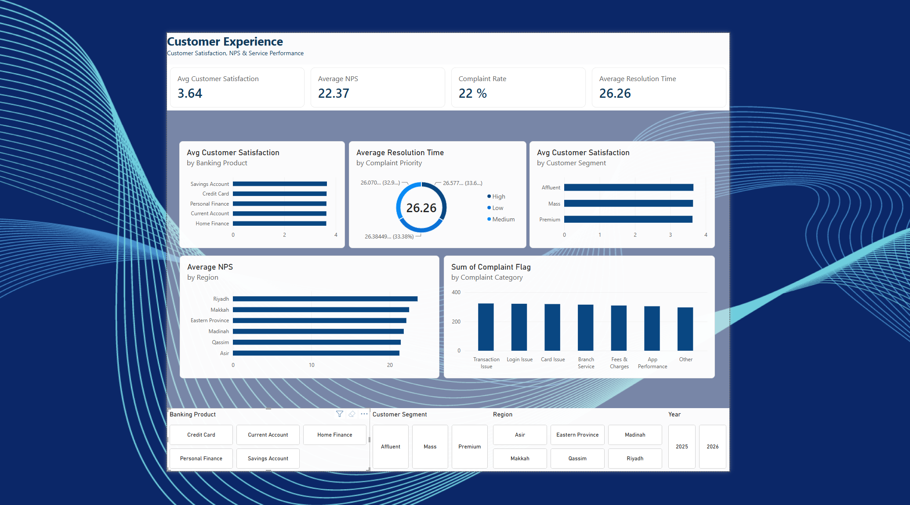

Digital Banking Customer Analytics
Turning customer, service and digital banking data into an interactive analytical experience for understanding customer satisfaction, engagement, service performance and retention signals.
From customer data to business insight.
The project was designed as an executive-facing banking analytics dashboard. Instead of looking at individual metrics separately, the dashboard connects customer satisfaction, digital behavior, complaint performance and retention signals into one analytical experience.

Making a wide dataset usable.
Banking customer data can contain many dimensions at once. The challenge was to transform a customer-level dataset into a dashboard that makes important business signals easy to understand and compare.
Customer Experience
Understand satisfaction, NPS, complaints and service resolution performance.
Digital Engagement
Explore mobile and internet banking usage, login behavior and session activity.
Retention Signals
Surface churn-risk patterns and compare them across digital behavior and customer segments.
One dataset. Multiple perspectives.
The main Customer Experience table combines customer, financial, digital engagement, service and retention variables. This structure allows the analysis to move from overall portfolio performance to specific behavioral and experience patterns.
Customer & Financial
- Customer Segment
- Region & Branch
- Account Type
- Banking Product
- Account Balance
- Loan Amount
- Monthly Revenue
Digital Engagement
- Mobile App Usage
- Internet Banking Usage
- Login Frequency
- Average Session Duration
- Device Type
Customer Experience
- Customer Satisfaction
- NPS Score
- Complaint Flag
- Complaint Category
- Complaint Priority
- First Response Time
- Resolution Time
Retention
- Customer Status
- Churn Risk
- Customer Segment
- Banking Product
- Regional Comparison
From raw data to dashboard.
I structured the analysis around a simple workflow: prepare the data, organize the model, define business metrics and translate the results into interactive visualizations.
Data Preparation
Cleaned and structured the dataset using Power Query.
Data Modeling
Organized date, branch and product relationships for analysis.
DAX & KPIs
Created measures for satisfaction, NPS, retention, churn, digital adoption, complaints, response time and revenue.
Visualization
Built interactive dashboard pages around business questions and user filtering.
The executive page provides a high-level snapshot of the banking customer base, combining customer satisfaction, NPS, complaint rate and revenue with regional and category-level breakdowns.
Total Customers
The dashboard provides a portfolio-level view of the customer base.
Average Satisfaction
Customer satisfaction is tracked alongside regional and category-level differences.
Average NPS
NPS adds a customer-loyalty perspective to the overall experience view.
This view goes deeper into satisfaction, NPS, complaint behavior and support performance, allowing comparisons across products, customer segments, regions and complaint priorities.

Complaint Rate
Complaint activity can be examined by category, region and customer dimensions.
Avg. Resolution Time
Resolution performance is broken down by complaint priority.
Customer Satisfaction
Satisfaction can be compared across banking products and customer segments.
This view focuses on digital banking adoption and customer retention signals, exploring mobile app usage, internet banking, session behavior and churn risk across regions and customer segments.

Digital Banking Adoption
Digital adoption provides a baseline for evaluating engagement across customers, regions and segments.
High Churn Risk
The dashboard surfaces the size of the high-risk customer group for retention analysis.
Avg. Session Duration
Session behavior is compared across customer segments to understand engagement.
Digital Engagement & Churn
Inactive mobile app users show significantly higher churn risk than active users, highlighting a potential relationship between digital engagement and customer retention.
Re-engage & Retain
Prioritize digital re-engagement campaigns for inactive users alongside targeted retention initiatives for high-risk customers.
What the analysis makes easier to see.
The dashboard connects customer experience, service performance and digital behavior rather than treating each metric in isolation.
Experience
Satisfaction and NPS can be compared across regions, banking products and customer segments, helping identify where experience differs.
Service Performance
Complaint categories, priorities, response time and resolution time provide visibility into customer support performance.
Digital Behavior
Mobile and internet banking activity can be explored alongside session behavior, products, regions and customer segments.
Retention
Churn risk can be viewed alongside digital engagement, creating a basis for targeted customer re-engagement and retention actions.